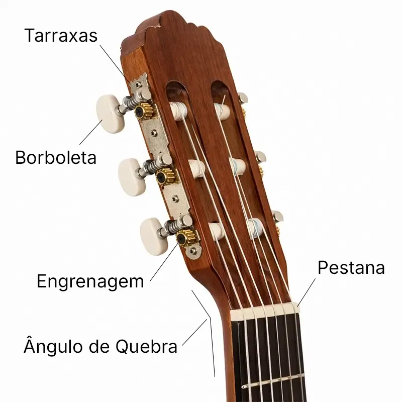
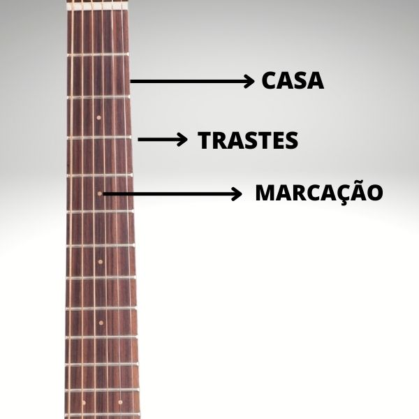
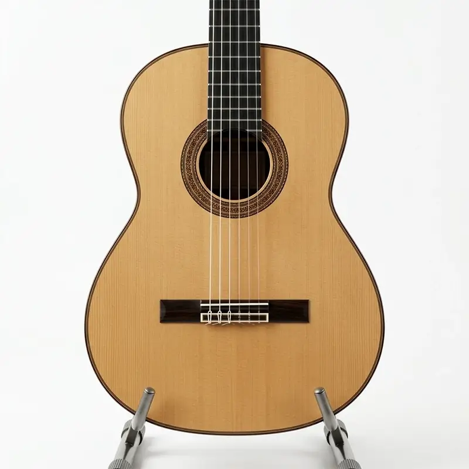
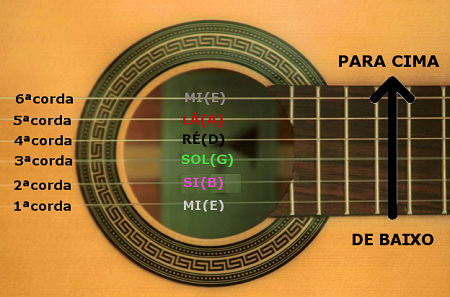

O VIOLÃO
É de extrema importância conhecer o violão antes de começar a tocar alguma música. O violão tem partes e cada parte tem exerce função, ele apresenta 6 cordas e cada corda tem uma afinacão.
Partes do violão

Headstock

Braço

Corpo

As cordas
Como dito anteriormente o violão tem 6 cordas, sua afinação padrão é essa:
6º(Mi) - 5º(Lá) - 4º(Ré) - 3º(Sol) - 2º(Si) - 1º(Mi)
